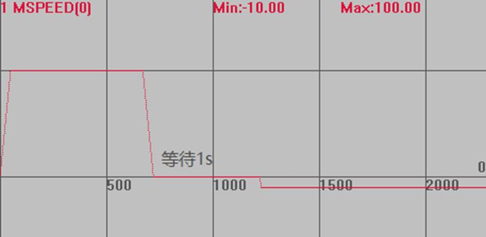
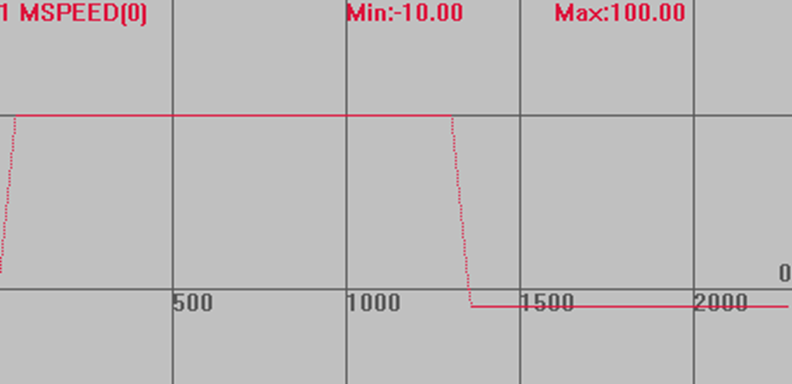

|
类型 |
轴参数 |
|
描述 |
此参数设置等待的时间，单位是毫秒。 对脉冲方式的伺服驱动器，回原点运动时，当反找时要等待一定时间。 控制器默认值为2ms。 |
|
语法 |
VAR1 = HOMEWAIT，HOMEWAIT = expression |
|
适用控制器 |
通用 |
|
例子 |
BASE(0) '选择轴0 DPOS=0 '坐标清0 UNITS=100 ATYPE=1 SPEED=100 '找原点速度100units/s ACCEL=1000,1000 '加速度1000units/s/s DECEL=1000,1000 '加速度1000units/s/s CREEP=10 '爬行速度10units/s DATUM_IN=0 '原点信号设为输入IN0 INVERT_IN(0,ON) '反转信号 HOMEWAIT=1000 '设置反找等待1s TRIGGER '自动触发示波器 DATUM(3) '正向找原点
速度曲线 碰到IN0口时，会先等待1s，然后在反向爬行 MSPEED(0)垂直刻度100 
HOMEWAIT=2 时，几乎不停止 MSPEED(0)垂直刻度100  |
|
相关指令 |